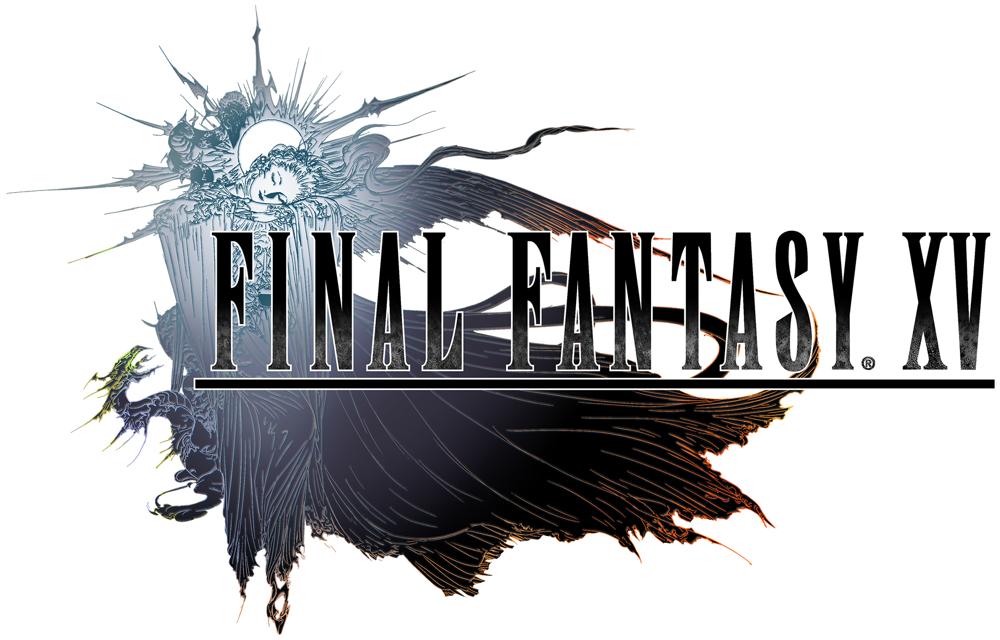

Об игре
Final Fantasy XV (яп. ファイナル ファンタジー XV файнару фантадзи: фи:фути:н), ранее известная как
Final Fantasy Versus XIII — видеоигра в жанре ролевого боевика, разработанная Square Enix для консолей PlayStation 4 и Xbox One.
Игра под названием Final Fantasy Versus XIII была анонсирована на выставке Е3 8 мая 2006 года; было объявлено, что, как и Final Fantasy XIII,
она разрабатывается для не вышедшей ещё на тот момент игровой консоли PlayStation 3.
Final Fantasy XV не связана с предыдущими играми серии Final Fantasy. Сюжет фокусируется на молодом человеке по имени Ноктис Люцис Кэлум,
наследном принце государства Люцис, где хранится последний оставшийся в мире таинственный магический кристалл. В начале игры кристалл обманом похищается вторгшейся враждебной нацией Нифльхейм,
из-за чего начинается глобальный конфликт с другими народами, которые желают получить кристалл. Ноктис и его ближайшие друзья отправляются в путешествие, чтобы попытаться вернуть потерянную магическую реликвию.
Сюжет
Действие Final Fantasy XV разворачивается в мире, напоминающем по окружению настоящее время.
Королевство Люцис, принцем которого является главный герой, Ноктис, является технически развитой державой, окружённой другими королевствами, по развитию не превосходящими королевство Люцис.
Причиной всему является непрекращающаяся война за магический кристалл, которым владеет королевская семья Кэлум.
История Final Fantasy XV берёт начало из инцидента после подписания мирного договора между королевствами касательно окончания боевых действий и
последующего использования кристалла в мирных целях. Конфликт разгорается вновь после того, как соседнее с Люцис королевство Нифльхейм вероломно нападает на столицу Люцис, Инсомнию,
из-за чего Ноктису и его друзьям приходится устраивать побег. Успешно развязав новый виток войны между владениями Солхейм, Тенебрэ и Аккордо, войска Нифльхейма захватывают последний кристалл, но Ноктис с друзьями пытаются отбить его обратно.
Персонажи
Игровой мир
Основной темой игры является путешествие с друзьями. В Final Fantasy XV воссоздан гигантский мир, доступный для исследования в любое время.
Мир бесшовный, а загрузки проходят только во время переходов между большими локациями. В то же время игроки просто не узнают, что местность будет загружаться — эффект будет замаскирован под сюжетные сцены.
Первоначально разработчики планировали ввести фиксированные локации и частично открытый для исследования мир, но после смены платформ на более мощные, было принято решение ввести полностью исследуемый мир.
При этом игроку дарована полная свобода; по словам Хадзиме Табаты, если игрок видит на горизонте что-то, то он может добраться туда. В то же время, если игроку надоест исследовать мир, он волен отправиться на сюжетное событие, чтобы продвинуться далее по сюжету.
Анимация персонажей зависит от местности; к примеру, после долгого бега они будут останавливаться, чтобы отдышаться.
В игре присутствует динамическая система смены дня и ночи и погодные условия. Как время дня, так и погода прямо влияют на геймплей — ночью появляются особые монстры, а дождь или жара, к примеру, будет влиять на эффект магии.
Из-за реалистичного течения времени (одни сутки в игре равны часу реального времени) персонажи вынуждены останавливаться на привалы, чтобы поесть и поспать. Персонажи после бессонной ночи будут хуже себя вести в бою и жаловаться на усталость, предельный максимум передвижения без сна — три внутриигровых дня.
Устроить привал можно практически в любом месте, но из-за обилия монстров рекомендуется делать это на попадающихся по пути заправках. Опыт за убитых монстров и законченные сторонние задания будет подсчитываться после окончания каждого дня.
Фокусом игры будет преодоление больших расстояний на автомобиле Ноктиса. Воспользоваться транспортом игрок может практически в любой момент, но не на любой местности. Игроки могут изменять внешний вид «Регалии» согласно своим предпочтениям. Управление машиной осуществляется либо вручную, либо автоматически.
Автомобиль имеет ограниченный запас топлива; при полном опустошении бензобака посреди дороги герои будут вынуждены либо самостоятельно толкать транспорт до ближайшей заправочной станции, либо вызвать Синди, которая за дополнительную плату отбуксирует «Регалию» к заправочной станции.
Помимо наземного транспорта группа разработчиков заинтересована в реализации дирижаблей; на Gamescom 2015 Хадзиме Табата подтвердил, что в данный момент они ищут способ воплотить идею в игре, отметив, что если им не удастся успеть реализовать воздушный транспорт к релизу Final Fantasy XV, то они обязательно его выпустят в качестве DLC.
Игрок сможет взаимодействовать с окружающей средой не только через битвы с монстрами. В игре будут присутствовать большие города, в лесах можно будет встретить дома с местными жителями, а у водоёмов возможно скоротать время за рыбалкой.